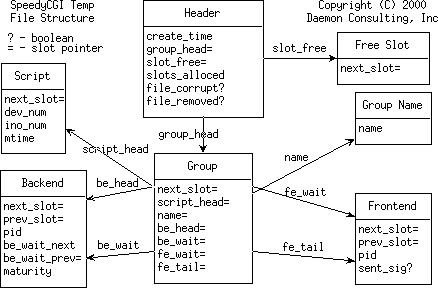

The perperl temp file contains in this order:
Below is a a graphical view of the file structure:|  |
| create_time | Time when file was created. | ||
| group_head | Pointer to a linked list of groups | ||
| slot_free | Pointer to a linked list of free slots | ||
| slots_alloced | Number of slots in the slot array. | ||
| file_corrupt | Boolean - is this file corrupt? This is true if a process locked this file, but exited or was killed before unlocking it. | ||
| file_removed | Boolean - has this file been removed from the filesystem? |
Slots can either be allocated by increasing the slots_alloced and increasing the file size if necessary, or by grabbing a free slot from the slot_free linked list.
Each slot is a union that can contain one of the following types of records:
Most records are arranged into linked lists of slots. Each slot is identified by its index within the array, starting at 1. Slot-0 represents the "null" slot and is used to terminate linked lists.
| next_slot | Pointer to the next free slot in the linked list |
A group record contains:
| next_slot | Pointer to the next group in the linked list | ||
| script_head | Pointer to the list of scripts within this group | ||
| name | If using a group name, this will point to a Group Name slot. | ||
| be_head | Linked list of all backends that are executing as part of this group, no matter what their state. | ||
| be_wait | Linked list of backends that are waiting for a connection from a frontend. | ||
| fe_wait | Linked list of frontend processes that are waiting for a connection from a backend. | ||
| fe_tail | Pointer to the last slot in the fe_wait linked list. |
| next_slot | Pointer to the next script in the linked list | ||
| dev_num | The st_dev field from the unix stat structure | ||
| ino_num | The st_ino field from the unix stat structure. | ||
| mtime | The st_mtime field from the unix stat structure. |
| next_slot | Pointer to the next proc in the linked list. This is used for all proc lists except be_wait. | |||||||||
| prev_slot | Pointer to the previous proc in the linked list. This is used for all proc lists except be_wait. | |||||||||
| pid | The unix process id. | |||||||||
| be_wait_next | Pointer to the next proc in the be_wait linked list. | |||||||||
| be_wait_prev | Pointer to the previous proc in the be_wait linked list. | |||||||||
| maturity |
Represents how mature this process is:
|
| next_slot | Pointer to the next proc in the linked list. | ||
| prev_slot | Pointer to the previous proc in the linked list. | ||
| pid | The unix process id. | ||
| sent_sig | Boolean - has this frontend been sent an alarm signal? |
| name | Array of characters containing the group name. |